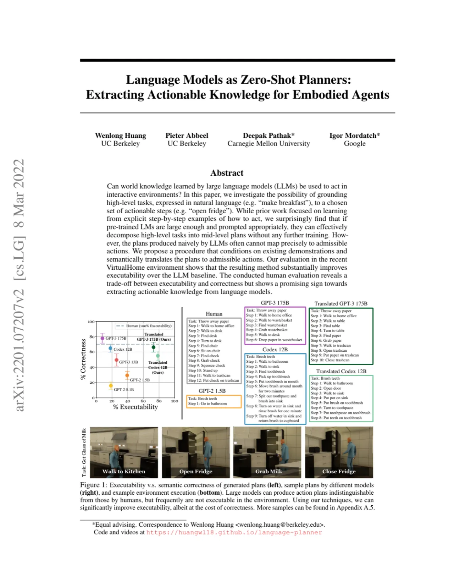
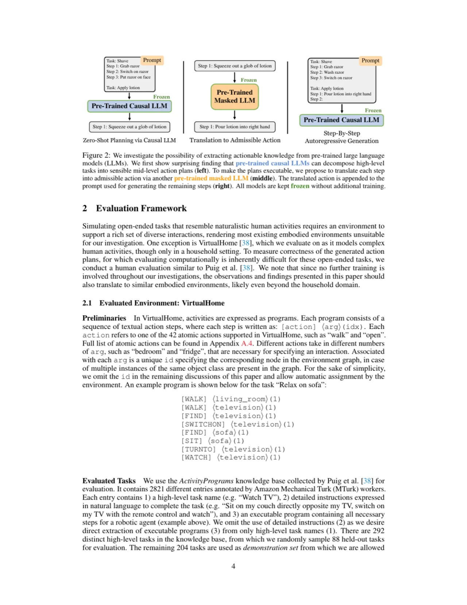
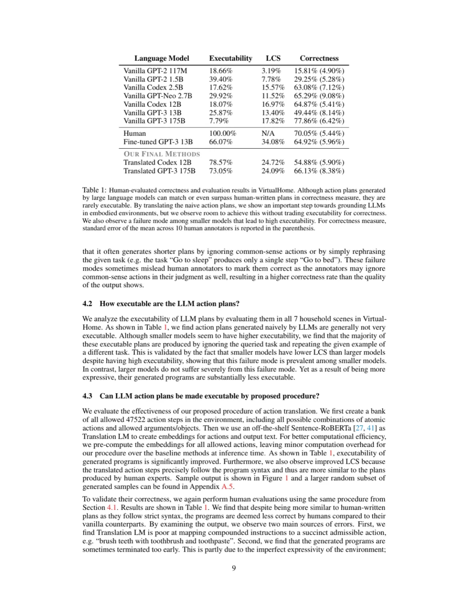
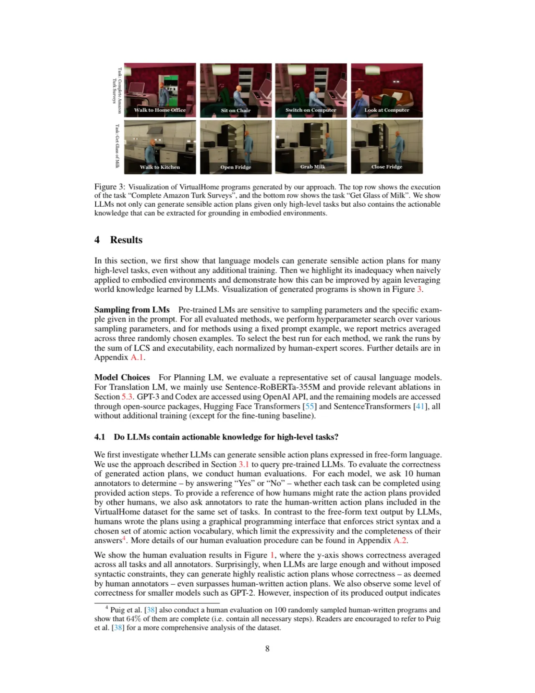

大型语言模型（LLMs）在预训练阶段积累了丰富的世界知识。本文探究：这些知识能否直接用于将自然语言高层任务（如 "make breakfast"）分解为可在仿真家庭环境中执行的动作序列，且无需任何额外训练？研究发现，足够大的 GPT-3 (175B) 和 Codex (12B) 可生成语义上堪比人类的计划，但计划的可执行率仅约 8–18%。通过三项推理时技术（语义动作翻译、自回归轨迹修正、动态示例选取），可执行率提升至约 73–79%，展示了从 LLMs 中萃取可操作知识的可行路径。
LLMs 通过海量文本预训练，内化了大量关于人类日常活动的世界知识。然而，先前研究大多将 LLMs 局限于语言生成与理解任务。本文提出核心问题：LLMs 中隐含的行动知识能否在无额外训练的情况下，直接驱动具身智能体执行家庭任务？
"We ask whether we can use such knowledge contained in LLMs not just for linguistic tasks, but to make goal-driven decisions that can be enacted in interactive, embodied environments."
挑战在于双重困境：LLMs 生成的自然语言计划语义上合理，却难以直接映射到环境支持的原子动作（如 [WALK] <bedroom>）；而严格约束输出格式又会丢失 LLMs 的世界知识。本文在 VirtualHome 仿真环境中评估，该环境支持 42 种原子动作，覆盖 292 类日常家庭活动。

本文提出一套推理时（inference-time）流程，将 Causal LM（Planning LM，如 GPT-3/Codex）与 Masked LM（Translation LM，如 Sentence-RoBERTa）配合使用，通过三个递进组件将自由文本计划翻译为环境可执行动作，全程不修改任何模型参数。

VirtualHome 支持 47,522 种合法动作步骤的组合。Planning LM 直接输出的自然语言步骤（如 "microwave the chocolate milk"）可能在词汇上与合法动作不匹配。本文预计算所有合法动作的 Sentence-RoBERTa 嵌入，在推理时将模型输出 â 通过余弦相似度映射到最近邻合法动作 aₑ：
C(f(â), f(aₑ)) = f(â)·f(aₑ) / (||f(â)|| · ||f(aₑ)||)
若对整个计划序列一次性翻译，前步错误会累积到后步。本文改为逐步生成：每步先采样 k 个候选动作短语，为每对（候选短语，合法动作）计算综合打分：
argmax[aₑ] max[â] C(f(â), f(aₑ)) + β·P_θ(â)
其中 β 是平衡语义相似度与语言模型置信度的权重系数。选出最高分的合法动作后追加到 prompt，使后续步骤在合法动作基础上续写。若 50% 以上样本为空或打分低于阈值 ε，则提前终止程序。
固定 prompt 示例不能反映查询任务的具体环境约束。本文复用 Translation LM，从 204 个示例任务中选取与查询任务语义最相似的任务-计划对作为 prompt 示例：
(T*, E*) = argmax C(f(T), f(Q))
例如，查询任务 "Apply lotion" 会自动选取 "Shave" 作为最相似示例，因为两者共享刮胡/涂抹步骤的动作模式。
实验在 VirtualHome 环境中的 88 个 held-out 任务、7 个家庭场景上进行，评估两个维度：Executability（可执行率，程序能否正确解析并满足环境前后条件）和 Correctness（正确性，由 10 位 Amazon Mechanical Turk 人类标注员判断动作序列是否完成任务）。还报告 LCS（最长公共子序列）作为代理指标。

| 方法 | Executability | LCS | Correctness（人类评估） |
|---|---|---|---|
| Vanilla GPT-2 117M | 18.66% | 3.19% | 15.81% (±4.90%) |
| Vanilla GPT-2 1.5B | 39.40% | 7.78% | 29.25% (±5.28%) |
| Vanilla Codex 12B | 18.07% | 16.97% | 64.87% (±5.41%) |
| Vanilla GPT-3 175B | 7.79% | 17.82% | 77.86% (±6.42%) |
| Human | 100.00% | N/A | 70.05% (±5.44%) |
| Fine-tuned GPT-3 13B | 66.07% | 34.08% | 64.92% (±5.96%) |
| Translated Codex 12B（本文） | 78.57% | 24.72% | 54.88% (±5.90%) |
| Translated GPT-3 175B（本文） | 73.05% | 24.09% | 66.13% (±8.38%) |

对三个组件分别做消融（Table 2，论文 p.10）：去掉任一组件均导致 Executability 和 LCS 下降。其中"去掉动作翻译"（w/o Action Translation）影响最大——Codex 12B 从 78.57% 降至 31.49%，GPT-3 175B 从 73.05% 降至 36.04%——证明语义翻译是提升可执行性的关键。"去掉轨迹修正"在 GPT-3 上出现 LCS 轻微提升（24.09% → 24.98%）但可执行率大幅下降（73.05% → 40.10%），表明轨迹修正在正确性和可执行性之间存在权衡。Translation LM 对比实验（Table 3）显示：使用预训练 Sentence-BERT 或 Sentence-RoBERTa 性能相近，而仅用 GloVe 均值向量性能显著下降（Executability: 46.92% vs. 78.57%）。
本文方法可显著提升可执行率，但代价是正确性下降。动作翻译引入两类主要错误：（1）Translation LM 难以将复合指令（如 "brush teeth with toothbrush and toothpaste"）准确映射到单一合法动作；（2）程序有时过早终止，因为部分必要动作或物体在 VirtualHome 中根本没有实现，Translation LM 无法找到足够相似的合法动作。这一问题也体现在人类编写程序仅有 70% 被认为完整。
本文聚焦于高层任务到中层动作（如 "grab cup"）的落地，假设存在一个低层控制器来执行这些中层动作，不涉及导航路径规划、操作轨迹等低层感知运动行为。要实现低层感知运动落地，仍需领域特定数据和微调。
模型不接收环境观测或执行反馈，与 VirtualHome 人类标注者通过"想象"写程序的方式相同。因此，计划假设每类物体只有一个实例，无法处理需要区分多个物体的任务（如 "stack two plates on the right side of a cup"）。
用单一指标衡量开放式任务的计划质量本身就困难——可执行性和正确性存在内在权衡，两者需联合考量。LCS 只是语义正确性的代理指标（由于一个任务往往有多种完成方式，不同人写出的计划 LCS 上限约为 0.489），存在不完美之处。